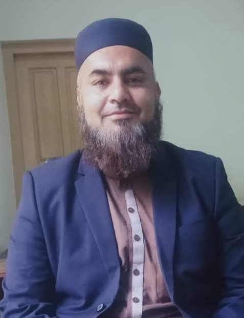

Translation & Localization
Accurate translation and cultural adaptation across Arabic, Urdu, Persian and English, with terminology and context under control.
Discuss a project ↗Translator · Interpreter · Localization Expert
I help organizations communicate across languages, markets and cultures with precision, context and human judgment.

01 / About
My work sits where language, technology and culture meet. For more than twelve years, I have worked across government, SaaS, Islamic institutions, gaming and multilingual content.
I specialize in Arabic–Urdu–Persian–English communication, localization, MTPE, linguistic QA and interpretation, while also working to preserve languages that technology too often overlooks.
That mission led to my work with FiKR&CD, focused on research, documentation and digital preservation of Indus-Kohistani and other endangered linguistic heritage.
Professional profile ↗02 / Services
Accurate translation and cultural adaptation across Arabic, Urdu, Persian and English, with terminology and context under control.
Discuss a project ↗Human post-editing, linguistic testing, terminology review and production-quality assurance for machine-assisted workflows.
Discuss a project ↗Context-aware multilingual interpretation for meetings, institutions and sensitive communication environments.
Discuss a project ↗Player-facing strings, UI language, cultural adaptation, terminology and linguistic testing for interactive products.
Discuss a project ↗Transcription, language documentation, dataset preparation and community-centered digital preservation.
Discuss a project ↗Multilingual subtitles, transcription and culturally precise digital content for public and private platforms.
Discuss a project ↗03 / Languages
It is knowing what they mean to the people who use them.
04 / Selected Work
GOVERNMENT · ISLAMIC SERVICES
Large-scale English/Arabic → Urdu/Persian translation and localization work across approximately 500,000 words.
LANGUAGE DATA · USA
Verified more than 1,500 Shina-language YouTube videos for language-data and speech-technology work.
EDUCATION · LANGUAGE PRESERVATION
Contributed to language-preservation and educational work supporting an endangered language community.
RESEARCH · CULTURAL TECHNOLOGY
Co-founder of a research and culture-development initiative focused on documentation, preservation and digital access.
GAMING · LOCALIZATION
Localization work involving player-facing language, terminology and culturally appropriate adaptation.
Language × Technology × Heritage
05 / Contact
Send the language pair, scope, deadline and context. Direct communication is available through email, WhatsApp or your preferred professional platform.
xl8.saif@gmail.com ↗